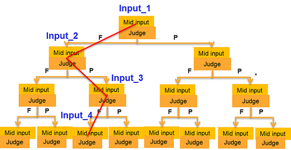

getSearchPath()
Retrieves the search path with the pass/fail results for all the nodes in the path.

As the figure above shows, this function returns an array which contains all the node values of Input_1, Input_2, Input_3, and Input_4.
Syntax
ARRAY_I getSearchPath()
Return Value
An ARRAY_I object which contains the pass/fail results for all the nodes in the search path.
Example
RDI_BEGIN();
rdi.cogo("B1").search(TA::LINEAR).pathPin("pinA")
.start(0).stop(4.0).step(10).blockBegin();
rdi....(rdi.searchInput()).execute();
...
rdi.cogo().search().blockEnd();
RDI_END();
rdi.id("B1").getSearchPath();Functional changes
- Introduced in SmartRDI 2.4.3